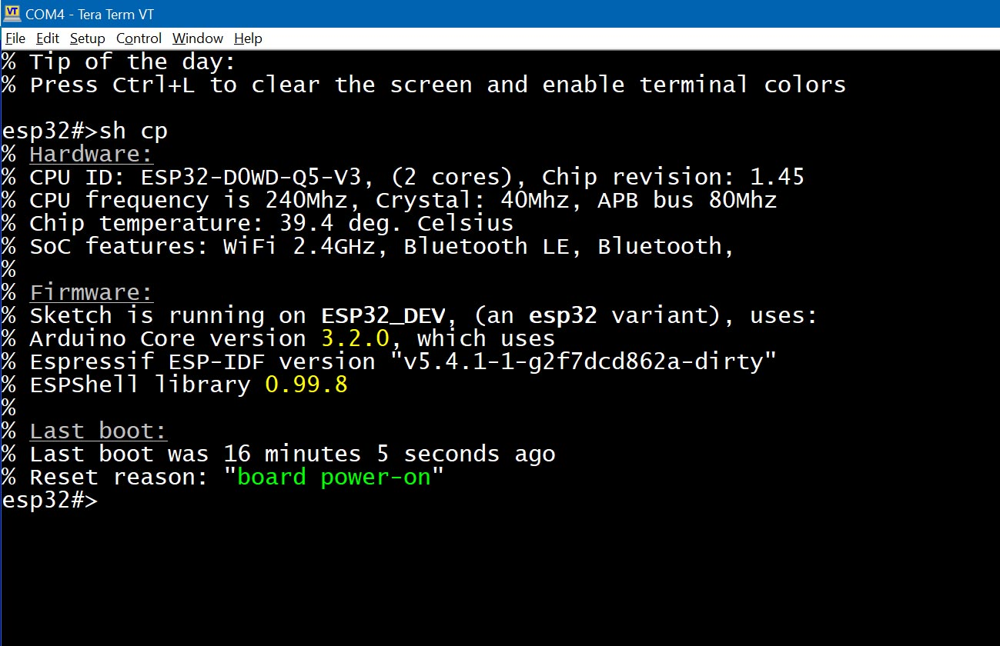

The ESP32 CPU supports changing its frequency at runtime. On classic ESP32, the main CPU frequency may also affect the APB bus frequency: if the CPU frequency drops below 80 MHz, the APB frequency becomes equal to the CPU frequency. This affects all timing-dependent modules like PWM, but you don't need to worry - ESPShell automatically recalculates all timings upon an APB frequency change.
| Command | Description and examples |
|---|---|
| cpu |
Displays the list of supported frequencies: esp32#>cpu % Supported frequencies are: 240, 160, 120, 80, 40, 20 and 10 MHz esp32#> |
| cpu FREQ |
Sets the CPU frequency to FREQ MHz (e.g., 240). The ESP32 supports 240, 160, and 80 MHz. Depending on the crystal oscillator (XTAL) frequency, additional options like XTAL / 4 and/or XTAL / 2 may be available. If an unsupported frequency is specified, ESPShell will display the list of supported frequencies:
esp32#>cpu 1
% 1 MHz is an unsupported frequency
% Supported frequencies are: 240, 160, 120, 80, 40, 20, and 10 MHz
% Invalid 1st argument "1" ("? cpu" for help)
|
show cpuid
Displays hardware and software information:

Fig. 1: Output of the "show cpuid" command
The output is divided into four sections: Hardware, Flash, Firmware, and Last Boot. The Hardware section shows the CPUID, CPU frequency, XTAL frequency, APB bus frequency, and CPU core temperature.
The Flash section provides flash chip details: size and manufacturer ID.
The Firmware section displays version information for components used to build the sketch, including the Arduino core version (mismatched versions are a common source of issues), the ESP-IDF version, and the ESPShell version.
The Last Boot section includes the output of the "uptime" command, showing system uptime and the reason for the last reboot.
ESPShell provides two commands to display memory-related information: show memory and show memory ADDRESS ...
| Command | Description and examples |
| show memory |
Displays total and available memory as seen by the sketch:
esp32#>sh mem % -- Heap information -- % % If using malloc() (default allocator): % 298824 bytes total, 249320 available, 110580 max per allocation % % If using heap_caps_malloc(MALLOC_CAP_INTERNAL), internal SRAM: % 347284 bytes total, 296928 available, 110580 max per allocationThis command can help identify memory leaks in your sketch. |
| show memory ADDRESS |
show memory ADDRESS [ COUNT ] [signed|unsigned|float|void*|int|char|short] Displays memory contents starting from a specific address. The address should be a hexadecimal number with or without the "0x" prefix. In its simplest form, this command requires only one argument - the address. It then displays a 256-byte hexdump from that location. Note that the ESP32 memory architecture is complex: some regions are only accessible through the instruction bus, some are restricted to CPU core #0 (ESPShell typically runs on Core #0), and some can only be accessed as 32-bit words. Espressif provides documents describing the memory maps for specific models: ESP32-S3, ESP32, etc. Example: Show memory contents starting from address 0x3fc97a30
esp32#>sh mem 0x3fc97a30
0 1 2 3 4 5 6 7 8 9 A B C D E F |0123456789ABCDEF
----------------------------------------------------------+----------------
0000: 01 00 00 00 02 00 00 00 03 00 00 00 9d ff ff ff |................
0010: 0c 0c 03 00 0b 00 00 00 5c 32 ca 3f 00 00 00 00 |........\2.?....
0020: 14 0e 09 3c 2c 2b ff ff 00 c2 01 00 1c 00 00 08 |...<,+..........
0030: 00 01 00 00 00 70 00 00 00 00 00 00 01 00 00 00 |.....p..........
0040: 00 00 00 00 ff ff ff ff 00 00 00 00 00 00 00 00 |................
0050: 00 00 00 00 00 00 00 00 00 00 00 00 02 00 00 00 |................
0060: 00 00 00 00 ff ff ff ff 00 00 00 00 00 00 00 00 |................
0070: 00 00 00 00 00 00 00 00 c8 7a c9 3f ff ff 3f b3 |.........z.?..?.
0080: 00 00 00 00 03 00 00 00 00 00 00 00 00 00 00 00 |................
0090: 00 00 00 00 00 00 00 00 00 40 00 60 c8 bb 07 3c |.........@.`...<
00a0: 00 00 00 00 cc bb 07 3c 00 00 00 00 d0 bb 07 3c |.......<.......<
00b0: 00 00 00 00 d4 bb 07 3c 00 00 00 00 d8 bb 07 3c |.......<.......<
00c0: 00 00 00 00 dc bb 07 3c 00 00 00 00 e0 bb 07 3c |.......<.......<
00d0: 00 00 00 00 e4 bb 07 3c 00 00 00 00 e8 bb 07 3c |.......<.......<
00e0: 00 00 00 00 ec bb 07 3c 00 00 00 00 f0 bb 07 3c |.......<.......<
00f0: 00 00 00 00 f4 bb 07 3c 00 00 00 00 f8 bb 07 3c |.......<.......<
esp32#>
Optional Arguments: count and typeTo specify the number of elements to display, use the COUNT argument:
esp32#>sh mem 0x3fc97a30 32
0 1 2 3 4 5 6 7 8 9 A B C D E F |0123456789ABCDEF
----------------------------------------------------------+----------------
0000: 01 00 00 00 02 00 00 00 03 00 00 00 9d ff ff ff |................
0010: 0c 0c 03 00 0b 00 00 00 5c 32 ca 3f 00 00 00 00 |........\2.?....
esp32#>
If not specified, COUNT defaults to 256. To interpret memory content as a specific data type, use one of the following: Use esp32#>sh mem 0x50000000 void * % 0x50000000 : 0x344dbbe1 Note: Even though the COUNT was omitted, only one element was displayed due to the type specifier ( esp32#>sh mem 0x50000000 10 void * % Array of 10 elements, 4 bytes each % Address : Value % 0x50000000 : 0x344dbbe1 % 0x50000004 : 0x9d2aa486 % 0x50000008 : 0x476c2e42 % 0x5000000c : 0x40da87ea % 0x50000010 : 0x607b4d64 % 0x50000014 : 0xfc28182e % 0x50000018 : 0x97b54ec4 % 0x5000001c : 0xefe11d7a % 0x50000020 : 0xd703bad6 % 0x50000024 : 0x698b7ad1 esp32#> Note: This command can be used to display array or variable contents, provided their addresses are known. Example: An unsigned integer array is located at address 0x3fc97a30. Display the first three elements: esp32#>sh mem 0x3fc97a30 3 unsigned int % Array of 3 elements, 4 bytes each % Address : Value % 0x3fc97a30 : 1 (0x1 as hex) % 0x3fc97a34 : 2 (0x2 as hex) % 0x3fc97a38 : 3 (0x3 as hex) esp32#> |